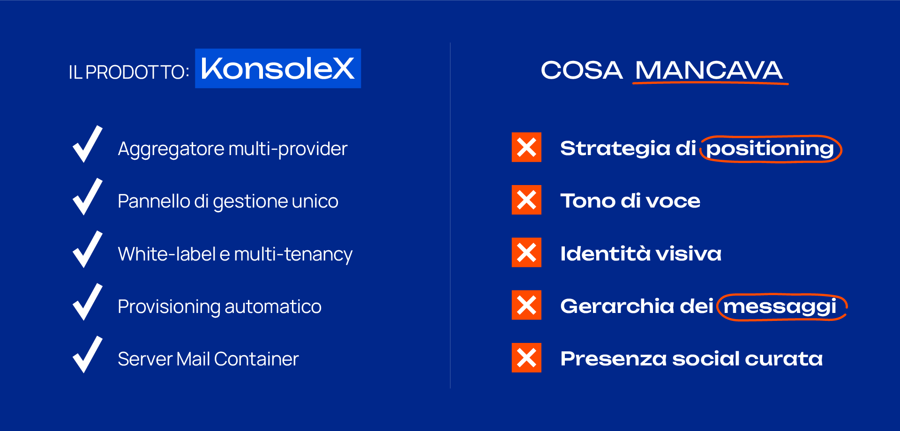
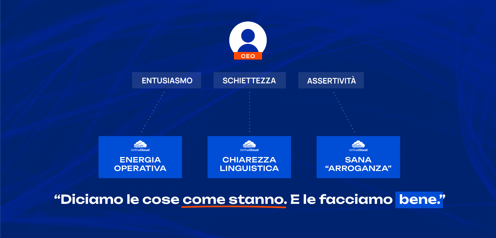
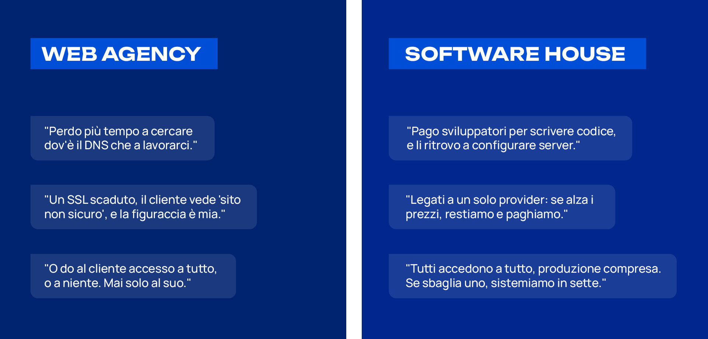
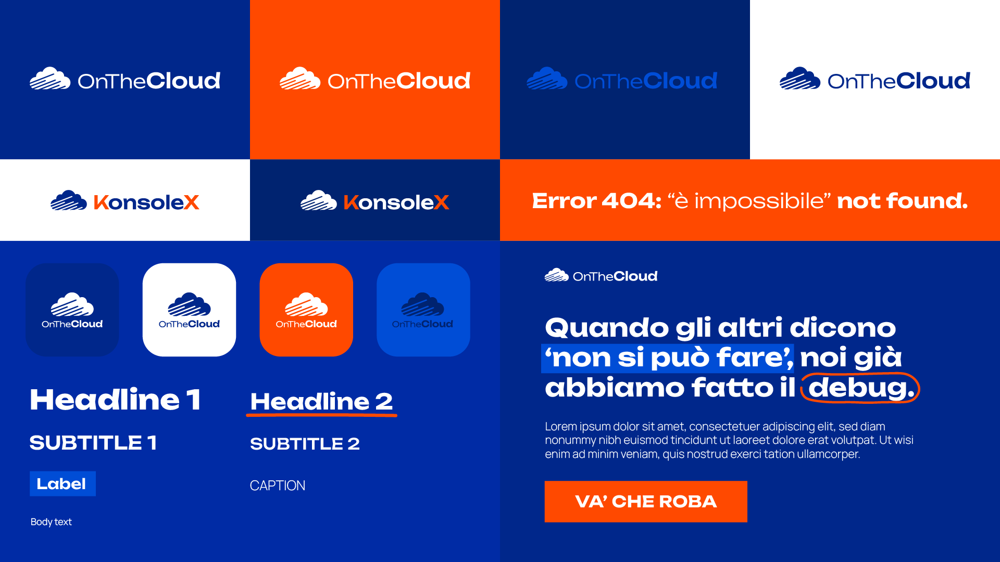
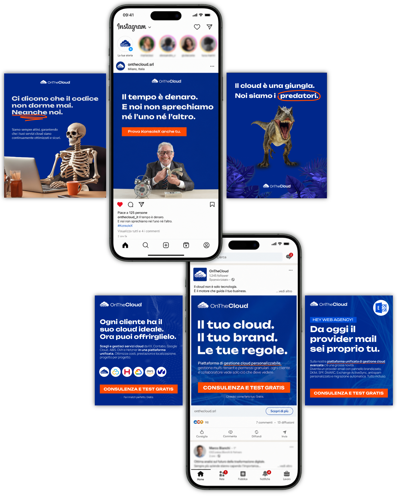
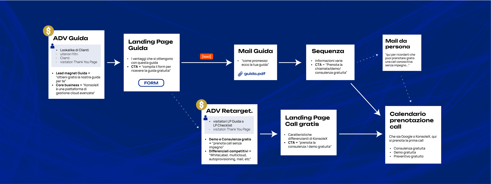
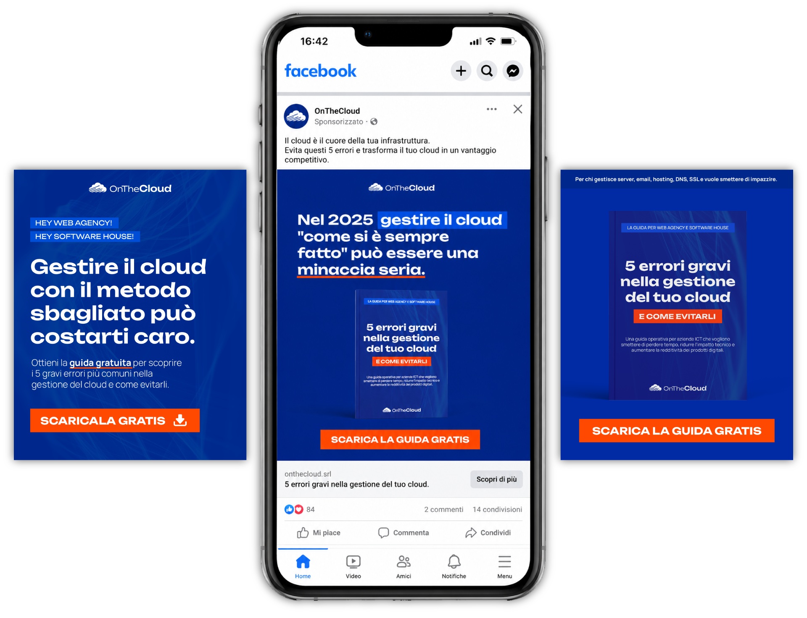

Febbraio – Giugno 2025
La richiesta iniziale era semplice: più lead e più clienti, subito. L'idea era che bastasse pubblicare contenuti — anche generici, anche automatizzati — per ottenerli. Ma mancava la base su cui dei contenuti possono funzionare: una strategia e un'identità da comunicare. Per quattro mesi ho guidato di fatto marketing e comunicazione: proposta, direzione e gestione di tutto ciò che segue.
La vera sfida non era produrre, ma guadagnarsi il tempo per la strategia. Chi guida un'azienda vuole risultati rapidi, ed è comprensibile; il mio lavoro è stato dimostrare che i contenuti generano domanda solo se dietro c'è un brand che li rende credibili. Prima di chiedere lead a un post, serve un posizionamento.
PMI ICT milanese, un prodotto solido: KonsoleX, piattaforma unificata di gestione cloud per web agency e software house. L'analisi di trend e competitor ha mostrato subito il problema: suonavano tutti uguali, messaggi intercambiabili, zero personalità. L'offerta era ricca ma dispersa — tante caratteristiche tecniche, nessuna gerarchia — e la parte più faticosa è stata proprio estrarre da quella complessità il filo che conta. L'unico touchpoint visibile era un sito generico e datato. Valori, promesse, tono di voce: assenti.

L'asset più distintivo dell'azienda non era nel prodotto e non era mai stato usato: era la personalità del fondatore — competenza vera che non si nasconde dietro il linguaggio corporate, entusiasmo, una sicurezza diretta e senza filtri. Il brand doveva parlare con quella voce: dice le cose come stanno, sa di farle bene e non finge modestia. In un mercato dove tutti si presentano uguali, la personalità è il differenziale più difficile da copiare.

Costruire il sistema nell'ordine giusto, resistendo alla pressione del pubblicare subito: prima la strategia — valori, promessa, tono di voce, posizionamento — poi l'identità visiva e il sito, poi i contenuti, e solo alla fine la distribuzione misurabile. Il posizionamento aveva un perno chiaro: OnTheCloud come abilitatore per le aziende ICT, autonomia e centralizzazione come promessa. In parallelo, restringere il target a web agency e software house, i cluster con i pain point più concreti, e trasformare la comunicazione da pubblicazione episodica a percorso utente completo, dall'inserzione alla call.

Dalla strategia è derivato tutto il resto. Prima il documento di brand — valori, promessa, tono di voce, posizionamento — poi il design system da zero: logo rimodernato, scelte tipografiche audaci, blu profondo e arancio acceso, cerchiature e sottolineature fatte a mano come motivo ricorrente. Su quel sistema ho assistito la realizzazione del nuovo sito e dell'interfaccia di KonsoleX; da lì sono nati i contenuti social e diverse iterazioni di campagne su Meta e LinkedIn, fino alla user journey completa col lead magnet: guida, creative, landing page, sequenza email, retargeting, prenotazione call.
Le prime campagne hanno funzionato da test. All'inizio i messaggi erano spalmati su troppi temi e il pubblico era troppo largo; ogni iterazione ha insegnato qualcosa, e da lì la stretta su web agency e software house e su ciò che davvero li muoveva. LinkedIn si è rivelato troppo costoso, così la spinta si è concentrata su Meta. Il perno finale è stata la guida "5 errori gravi nella gestione del tuo cloud", pensata per essere davvero utile a chi la scarica. In parallelo, ho co-progettato il video demo di KonsoleX, oggi in homepage del cliente.



In quattro mesi OnTheCloud è passata da nessuna identità a un brand operativo su tutti i canali: strategia, identità visiva, sito, tono di voce, contenuti e un funnel di acquisizione attivo. Il valore non è nei singoli pezzi ma nella derivazione: ogni creative, ogni email, ogni pagina discende dallo stesso documento strategico. È la differenza tra pubblicare e costruire una strategia.

Prima il brand,
poi si parla di lead.